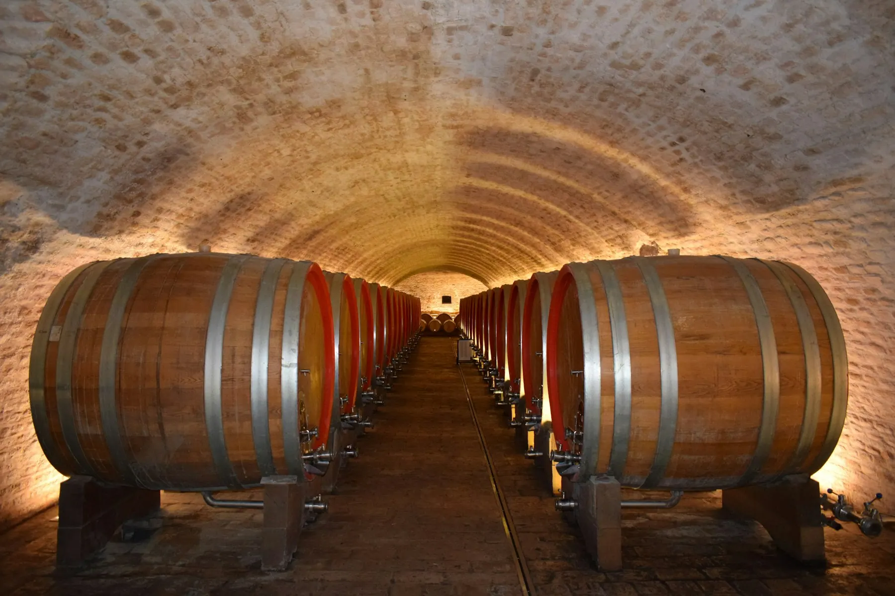
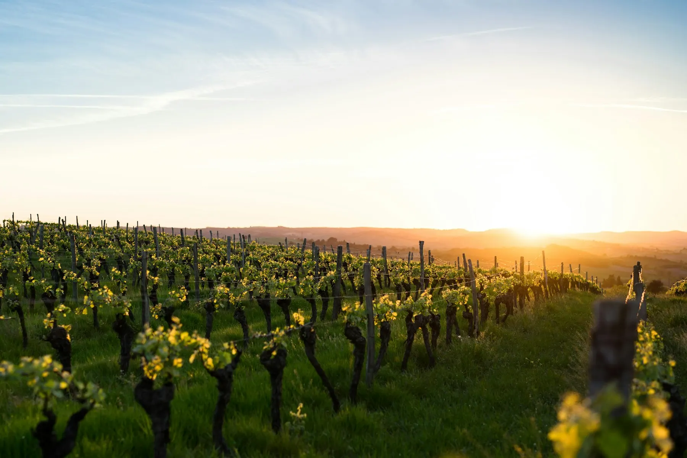

Винодельня · с 1994 года
Codru
Семейная винодельня в лесах Кодр, в сорока минутах от Кишинёва. Листайте — нальём.
Фетяска нягрэ. Вишня, чернослив и немного дыма. Её пьют только здесь.
0 млв бокале

Три километра
подвалов
Вино отдыхает в дубовых бочках при двенадцати градусах — круглый год. На дегустации вы пройдёте весь путь: от лозы до бокала.
Фетяска нягрэКрасное сухое · 2021
320 лейФетяска албэБелое сухое · 2023
260 лейРарэ нягрэКрасное · выдержка 3 года
450 лей
Дегустация
Выберите программу, день и сколько вас. Экскурсия по подвалам — в каждой программе.
Гостей
День
Добавить
Ваш визит
- Программа
- —
- Когда
- —
- Гостей
- —
Итого0 лей
Выберите день
Ждём вас. Трансфер из Кишинёва можно добавить в ответном сообщении. Это пример: запись никуда не ушла.

Noroc!
За здоровье.
Адресс. Кожушна, Страшенский район · 40 минут от Кишинёва
ЧасыВт–Вс 10:00 — 19:00
Связь+373 600 00 000 · Viber